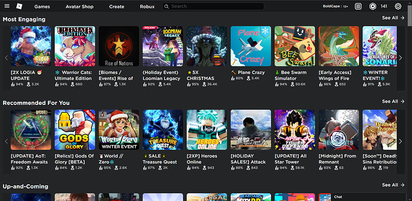
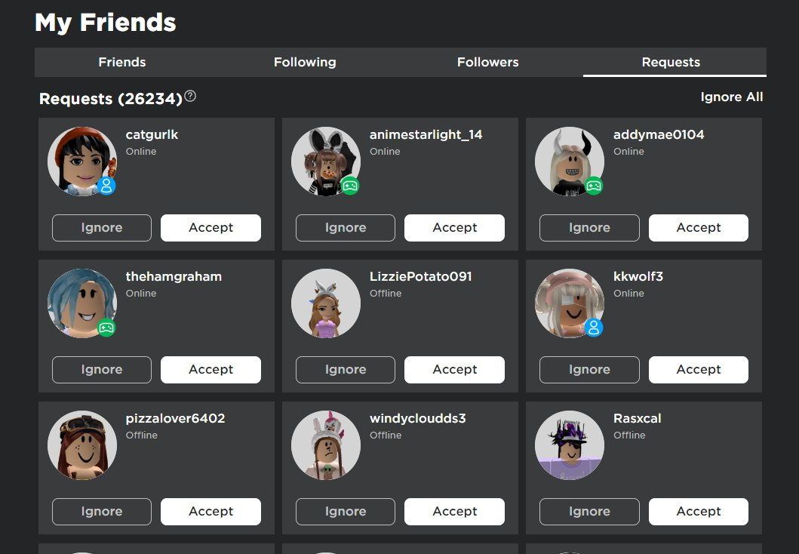
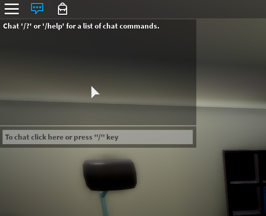
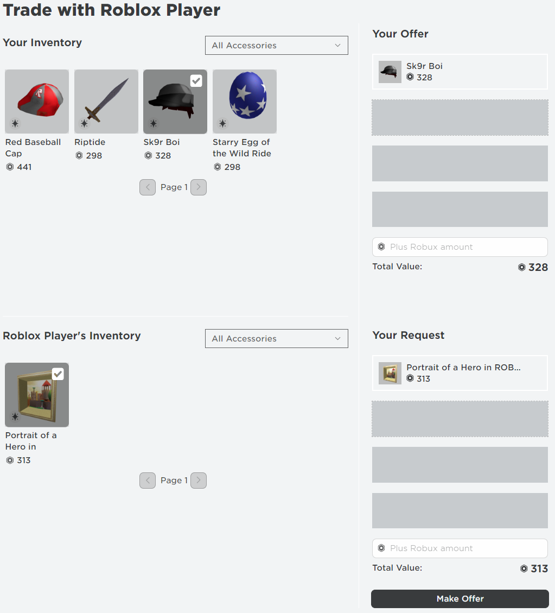
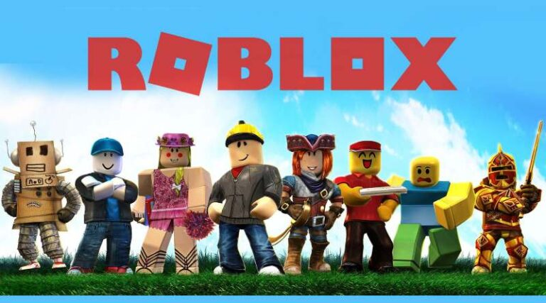

Roblox is a app or a website that has games inside that you can play. When Players play the games, they can imagine, socialize, chat, play, create, interact and relate with others in many ways. Roblox says that people ages 10 and more can play since sometimes scary stuff can happen. But still if you are under 10 you can play, but carefully with some supervision. Roblox is a pretty fun website with many things you can do.
You need to make an account to play the Foblox games. For the account, there is a username and a password. Of course in mostly all websites, you have to make or use a username and a password. Also in the Roblox sign up, you have to fill out your birthday and gender. Incase if you already have an account on Roblox, there will be a log in button on the top right of the Roblox sign up/log in page. Below this paragraph is a picture which is Roblox's Sign up page.
Their are more than 40 million games in Roblox. In Roblox, you can either make or play games. In order to make games, you have to either download the app "Roblox Studios" or just go to create in roblox and press a button that will lead you to creating. Below this paragraph is a picture which is some of the games that are in Roblox.
 Click on this text to go back to the links!In Roblox, their is a online currency called "Robux". It is not an actual currency, but for this game it is a currency. Robux is a game online currency that you have to buy with real money, and this robux will let you buy stuff that is not free, like some avatar acessories, and some roblox game items. You can either buy the robux on the website/app or get a gift card. You can even get stuff without Robux (For Free). Below this paragraph is a picture of Robux.
Click on this text to go back to the links!In Roblox, you have an avatar. An avatar is a game person that is the person that will play the games you play. You can dress up your roblox avatar to look like anything. With Robux you can buy the items that are not for free. Even though if you don't have robux, there are many free things you can get in the avatar section for free. Below this paragraph is a picture of a beginning boy and beginning girl avatar in Roblox.
In Roblox, You can have friends. You just have to friend request them and they might accept or decline. Even people can friend you and you can either accept or decline their offer. But be careful of the people you friend because if you don't know them, they can be nice to you on computer, but mean in real life. So be careful for the people you friend. This is not to scare you, but it is just to tell you not to friend the wrong people. BTW Their is also a thing that people can follow you like instagram and you can follow them too. Below this paragraph is a image of someone's friend requests.
 Click on this text to go back to the links!In Roblox, after friending your friend, you can chat with them. On the right hand corner, down, their will be a box the says chat on the top, and inside the box will be your friends username. Even in a game, you can chat with anyone in the game. Below this paragraph is the image of Roblox Chat Box (game chat not in actual roblox home screen chat).
 Click on this text to go back to the links!In Roblox, You can even trade items. Like Robux and more. But you have to have trade requests. But it is fine if you don't to. When you go to the Trade section in Roblox, there is a link that says "How do I Trade?". You can click that link if you don't know how to trade, and it will tell you all about how to trade. But Scammers is the Bad part of trading because they can make you give your stuff away and they won't give you anything back by tricking you. But you can report this scammer thing to roblox if you need to. Below this paragraph is a picture of trading.
 Click on this text to go back to the links!You can play roblox on any kind of device like an ipad, imac, dell, macbook, iphone, monitor, Xbox one, and more.
The top 10 famous games in roblox are (This is in Order) Adopt me!, Pet Simulator X, Murder Mystery 2, Welcome to Bloxburg, Royale High, Blox Fruits, Meepcity, Brookhaven RP, Tower of Hell, and Anime Fighting Simulator.
References: Google and Roblox.
This Game is Created by Roblox and is not my game.